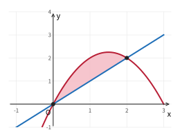
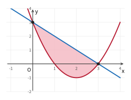
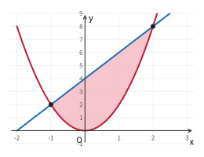

ホーム ＞ 数学II ＞ 積分法（定積分・面積）
別冊練習問題 4 の解答 放物線と直線で囲まれた面積
(1) 放物線 \(y=- x^{2} + 3 x\) と直線 \(y=x\) で囲まれた部分の面積 \(S\) を求めよ。
交点の \(x\) 座標を求める
\(- x^{2} + 3 x=x\) を解く。
\[- x^{2} + 2 x=0\ \Rightarrow\ - x \left(x - 2\right)=0\ \Rightarrow\ x=0,\ 2\]上下関係を調べる
\(x=1\) で \(f=2,\ g=1\)。区間で「放物線 \(y=f(x)\) が上、直線 \(y=g(x)\) が下」。
面積を定積分で表す
\[S=\int_{0}^{2}\left\{\left(- x^{2} + 3 x\right)-\left(x\right)\right\}dx=\int_{0}^{2}\left(- x^{2} + 2 x\right)dx\]計算する
\[S=\Big[- \dfrac{x^{3}}{3} + x^{2}\Big]_{0}^{2}=\dfrac{4}{3}-\left(0\right)=\dfrac{4}{3}\]
【答案】
\[S=\dfrac{4}{3}\]答
(2) 放物線 \(y=x^{2} - 4 x + 3\) と直線 \(y=- x + 3\) で囲まれた部分の面積 \(S\) を求めよ。
交点の \(x\) 座標を求める
\(x^{2} - 4 x + 3=- x + 3\) を解く。
\[x^{2} - 3 x=0\ \Rightarrow\ x \left(x - 3\right)=0\ \Rightarrow\ x=0,\ 3\]上下関係を調べる
\(x=\dfrac{3}{2}\) で \(f=- \dfrac{3}{4},\ g=\dfrac{3}{2}\)。区間で「直線 \(y=g(x)\) が上、放物線 \(y=f(x)\) が下」。
面積を定積分で表す
\[S=\int_{0}^{3}\left\{\left(- x + 3\right)-\left(x^{2} - 4 x + 3\right)\right\}dx=\int_{0}^{3}\left(- x^{2} + 3 x\right)dx\]計算する
\[S=\Big[- \dfrac{x^{3}}{3} + \dfrac{3 x^{2}}{2}\Big]_{0}^{3}=\dfrac{9}{2}-\left(0\right)=\dfrac{9}{2}\]
【答案】
\[S=\dfrac{9}{2}\]答
(3) 放物線 \(y=2 x^{2}\) と直線 \(y=2 x + 4\) で囲まれた部分の面積 \(S\) を求めよ。
交点の \(x\) 座標を求める
\(2 x^{2}=2 x + 4\) を解く。
\[2 x^{2} - 2 x - 4=0\ \Rightarrow\ 2 \left(x - 2\right) \left(x + 1\right)=0\ \Rightarrow\ x=-1,\ 2\]上下関係を調べる
\(x=\dfrac{1}{2}\) で \(f=\dfrac{1}{2},\ g=5\)。区間で「直線 \(y=g(x)\) が上、放物線 \(y=f(x)\) が下」。
面積を定積分で表す
\[S=\int_{-1}^{2}\left\{\left(2 x + 4\right)-\left(2 x^{2}\right)\right\}dx=\int_{-1}^{2}\left(- 2 x^{2} + 2 x + 4\right)dx\]計算する
\[S=\Big[- \dfrac{2 x^{3}}{3} + x^{2} + 4 x\Big]_{-1}^{2}=\dfrac{20}{3}-\left(- \dfrac{7}{3}\right)=9\]
【答案】
\[S=9\]答